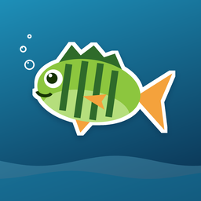

PhiLioFischen im Kanton Bern – einfach erklärt
PhiLio zeigt dir auf einen Blick, welche Fische du heute fangen darfst, wo die Patentgewässer und Schongebiete liegen und welche Regeln gelten. Für Kinder und Erwachsene.
Das kann PhiLio
- «Was darf ich heute?» – Schonzeiten, Mindestmasse und Tageslimiten pro Gewässer und Datum
- Fischlexikon mit 15 heimischen Arten, Ködern und Angelmethoden
- Karte mit Patentgewässern, Schongebieten, Freiangel-Ufern und Spots
- Regeln, Patente und ein Quiz mit PhiLio
Support
Fragen, Fehler oder Ideen? Schreib uns: philipp.scacchi@gmail.com
PhiLio ist keine offizielle App des Kantons Bern. Massgebend sind die Vorschriften des Fischereiinspektorats. Patente löst du in der offiziellen App «Fischen Bern».